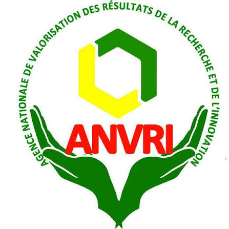

« School is Good, School pays »
Créée à l'initiative du Professeur Titulaire Aimé Christian KAYATH, l'École Ké Bien Fondation œuvre pour la promotion des bonnes mœurs, l'excellence académique et la valorisation du potentiel scientifique et novateur de la jeunesse congolaise.
« L'école est bien, l'école paye »
Rejoindre l'Événement Officiel
Partenaire Officiel ANVRIL'École Ké Bien Fondation est née d'une conviction inébranlable : le redressement des mœurs, le progrès socio-économique et l'autonomie durable d'une nation reposent sur l'éducation et la recherche appliquée.
Face aux dérives comportementales et à la dévalorisation perçue des études, la fondation apporte la preuve vivante que l'école paye lorsqu'elle est menée avec passion, rigueur et créativité.
Nous construisons des ponts solides entre l'université, les instituts de recherche comme l'ANVRI, le monde socio-professionnel et la jeunesse montante.
Chaque action de l'École Ké Bien Fondation est guidée par un socle éthique et intellectuel exigeant, garant d'un impact pérenne et authentique.
Nous cultivons l'amour de la rigueur scientifique, la maîtrise des concepts et le refus de la médiocrité. L'excellence est notre boussole dans chaque master class, chaque communication et chaque travail de recherche.
Le savoir sans conscience n'est que ruine. Nous plaçons la droiture morale, l'honnêteté intellectuelle et le civisme exemplaire au cœur de l'éducation pour forger des citoyens responsables et respectés.
Chaque jeune doit avoir la certitude que son labeur portera ses fruits. Nos évaluations, concours et récompenses sont strictement impartiaux et transparents, célébrant le travail authentique.
En partenariat avec l'ANVRI, nous encourageons une recherche utile, capable de déboucher sur des brevets, des procédés novateurs et des réponses concrètes aux défis de santé, d'agronomie et d'environnement.
Le devoir des aînés est d'éclairer la voie des cadets. Par le mentorat, les bourses et le parrainage, nous formons une chaîne d'entraide intergénérationnelle où personne de talentueux n'est laissé pour compte.
Un programme d'action méthodique et concret pour accompagner les jeunes du secondaire à l'université et vers le monde professionnel.
Transmission du savoir académique, master classes spécialisées, ateliers d'initiation pratique et séminaires méthodologiques.
Mentorat individuel, orientation vers les filières d'excellence et coaching personnalisé pour révéler les talents.
Attribution de bourses d'études transparentes et dotation de prix récompensant la créativité et les innovations majeures.
Distribution de fournitures et matériels didactiques, valorisation publique et valorisation des résultats de recherche avec l'ANVRI.
Enseignant-chercheur émérite et figure de proue de la recherche scientifique en biosciences à l'Université Marien Ngouabi, le Professeur Aimé Christian KAYATH consacre sa carrière à la formation de la jeunesse et à la valorisation du savoir-faire scientifique congolais.
Auteur de multiples travaux scientifiques et promoteur de l'innovation locale.
Initiateur de la JSB et des programmes de mentorat en milieu scolaire et universitaire.
La manifestation scientifique incontournable de Brazzaville revient pour sa 3e édition ! Organisée par l'École Ké Bien Fondation en partenariat officiel avec l'ANVRI (Agence Nationale de Valorisation des Résultats de la Recherche et de l'Innovation).
Date officielle à confirmer
Université Marien Ngouabi
Soutenu par l'ANVRI
FST, Santé, ENS, IRA, IRSEN...
Évaluation rigoureuse par un Comité Scientifique d'experts en partenariat avec l'ANVRI.
L'École Ké Bien Fondation collabore avec les institutions nationales de référence pour valoriser l'excellence scientifique congolaise.
Agence Nationale de Valorisation des Résultats de la Recherche et de l'Innovation
L'ANVRI s'associe à l'initiative de la Journée des Sciences Biologiques pour encourager les vocations d'inventeurs, faciliter la valorisation pratique des projets scientifiques primés et renforcer l'écosystème d'innovation en République du Congo.
Rejoindre nos Partenaires OfficielsVous êtes étudiant, chercheur, enseignant ou responsable d'institution ? Participez à l'aventure, proposez une candidature ou devenez partenaire officiel de nos actions.